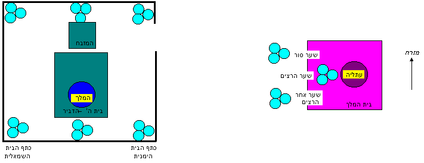

קוד: מבנה מלכים ב יא בתנ"ך
סוג: מבנה2
מאת: אראל
אל: פירושים וסימנים 12
לאחר שש שנות שלטונה של עתליהו המרשעת, החליט יהוידע, הכהן הגדול, למרוד בה ולהמליך את יהואש (מל"ב יא):...
ובשנה השביעית שלח יהוידע וייקח את
שרי המאות, לכרי ולרצים, ויבא אותם אליו, בית ה’; ויכרות להם ברית וישבע אותם בבית ה’, וירא אותם את בן המלך.
בהמשך תיאר לפניהם יהוידע את תכנית המרד שלו:
ויצוום לאמור: 'זה הדבר אשר תעשון:
השלישית מכם, באי השבת, ושומרי משמרת בית המלך.
והשלישית בשער סור,
והשלישית בשער אחר הרצים; ושמרתם את משמרת הבית, מסח.
ושתי הידות בכם, כול יוצאי השבת, ושמרו את משמרת בית ה’, אל המלך...'
כדי להבין את תכנית המרד נתבונן בתרשים אפשרי
סכימטי ביותר
של הבניינים על הר הבית:

הסברים:
שער סורו
שער אחר הרציםהם שערים של בית המלך.
הסבר: מדבריו של יהוידע נראה ש"באי השבת" התחלקו לשלוש שלישיות: שלישית אחת בבית המלך, שלישית אחת בשער סור ושלישית אחת בשער אחר הרצים, ולכולם נאמר
ושמרתם את משמרת הבית[בית המלך]
מסח(לכן ציירתי 3 קבוצות של חיילים באזור בית המלך) [1].
שער הרציםהוא גם-כן שער של בית המלך. הסבר: בסוף הפרשה כתוב
ויבואו דרך שער הרצים בית המלך.נראה שהוא הכניסה הראשית של בית המלך, כמו שרואים גם במל"א יד 27:
ויעש המלך רחבעם תחתם מגיני נחושת; והפקיד על יד שרי הרצים, השומרים פתח בית המלך. ויהי מדי בוא המלך בית ה' -- יישאום הרצים, והשיבום אל תא הרצים.
שער אחר הרציםהוא שער שנמצא ממערב ("אחר") שער הרצים.
ושתי הידות בכם כל יוצאי השבת...נראה ש"יוצאי השבת" היו כפולים במספרם מ"באי השבת", ומהמשך דבריו
...ושמרו משמרת בית ה' אל המלךנראה שהם היו אחראים לשמור על אזור בית ה', שבו נמצא המלך הצעיר [2] (לכן ציירתי 6 קבוצות של חיילים באזור בית ה') [3].
השלישית מכם, באי השבת... ושמרתם את משמרת הבית מסח.
ושתי הידות בכם, כל יוצאי השבת... ושמרו את משמרת בית ה' אל המלך. לשם כך
והקפתם על המלך סביב, איש וכליו בידו, והבא אל השדרות(אל בין שתי שורות השומרים המסודרות)
יומת(כי הוא כנראה רוצה לפגוע במלך)
; והיו את המלך בצאתומבית ה'
ובבואואל בית המלך.
ויעשו שרי המאות ככל אשר ציווה יהוידע הכהן: ויקחו איש את אנשיו, באי השבת עם יוצאי השבת; ויבואו אל יהוידע הכהן. וייתן הכהן לשרי המאות את החנית ואת השלטים אשר למלך דוד - אשר בבית ה’. ויעמדו הרצים איש וכליו בידו, מכתף הבית הימנית– הדרומית –
עד כתף הבית השמאלית– הצפונית – [5]
למזבח, ולבית - על המלך סביב. ויוציא את בן המלך, וייתן עליו את הנזר ואת העדות, וימליכו אותו, וימשחוהו; ויכו כף - ויאמרו, יחי המלך.
ותשמע עתליה את קולמחיאות הכפיים של
הרציןושל
העם; ותבוא אל העם, בית ה’. ותרא והנה המלך עומד על העמוד כמשפט, והשרים והחצוצרות אל המלך, וכל עם הארץ שמח, ותוקע בחצוצרות; ותקרע עתליה את בגדיה, ותקרא'קשר קשר!!!'.יהוידע חשש שכמה אנשים יושפעו מהקריאה הסמכותית של עתליה ותתפתח מלחמת-אחים, ולכן החליט שחייבים לחסל את עתליה מייד:
ויצו יהוידע הכוהן את שרי המאות פקודי החיל, ויאמר אליהם הוציאו אותהמקרב העם
אל מבית לשדרותאל בין שתי שורות השומרים
, והבא אחריה המת בחרב: כי אמר הכהן 'אל תומת בית ה’'. וישימו לה ידיים(השומרים בשתי השורות החזיקו אותה בידיהם והעבירו אותה מיד ליד לכיוון בית המלך),
ותבוא דרך מבוא הסוסים– לא ידוע לי איפה הוא (ולמה דווקא משם) –
בית המלך; ותומת שם.
ויכרות יהוידע את הברית: בין ה’ ובין המלך ובין העם, להיות לעם לה’; ובין המלך ובין העם. ויבואו כל עם הארץ בית הבעל, וייתצוהו, את מזבחותיו ואת צלמיו שיברו היטב, ואת מתן כהן הבעל הרגו לפני המזבחות; וישם הכהן פקודות על בית ה’. וייקח את שרי המאות ואת הכרי ואת הרצים ואת כל עם הארץ, ויורידו את המלך מבית ה’, ויבואו דרך שער הרצים– הכניסה הראשית –
בית המלך; ויישב, על כיסא המלכים.
וישמח כל עם הארץ, והעיר שקטה; ואת עתליהו המיתו בחרב, בית המלך.
א. בפסוק כתוב שלוש פעמים "השלישית
". אפשר לפרש שהכוונה לאותם אנשים: השלישית – שהם באי השבת – ישמרו בבית
המלך, וישמרו גם בשער סור, וישמרו גם בשער אחר הרצים. ואפשר לפרש ש"באי
השבת" יתחלקו ל3 קבוצות וכל קבוצה תשמור במקום אחר: שליש אחד מבאי השבת
ישמרו בבית המלך, השליש השני ישמרו בשער סור, והשליש השלישי ישמרו בשער
אחר הרצים.
ב. "ושמרתם את משמרת הבית מסח
" = לפי הפירוש הראשון –
הכוונה היא שהשומרים 'יסיחו' את עצמם ממקום למקום, כלומר יסתובבו בכל
האזור של בית המלך בזמן השמירה. לפי הפירוש השני – הכוונה היא שהם 'יסיחו
את דעתה' של עתליה מהאירועים שיקרו בבית ה'.
[2]
"ושמרו את משמרת בית ה' אל המלך
" = "ושמרו את משמרת בית ה', כשתשומת-ליבם מופנית אל המלך".
[3]
לפי זה נראה ששומרי בית המלך התחלקו ל3 משמרות: בכל שבת – החיילים של
משמרת אחת היו "באים" לשמור, והחיילים של שתי המשמרות האחרות היו "יוצאים"
הביתה. בשבת שבה התבצע המרד –
באי השבת
מלאו את תפקידם הרגיל ושמרו באזור בית המלך (כדי להסיח את דעתה של עתליה – שלא תשים לב שיש שינוי), אבל
יוצאי השבת
לא יצאו הביתה אלא נשארו באזור בית ה'.
[4] למה יהוידע חיכה שש שנים לפני שמרד בעתליה? – אולי הוא לא רצה להחליש את ממלכת יהודה, כי היא היתה עדיין במצב מלחמה עם ממלכת ישראל. רק לאחר שישראל נחלשה במלחמות נגד ארם (ע' מל"ב י 32) הוא החליט למרוד. לפרטים נוספים על עתליה ראו שיעור על עיקרון המרד.
[5]
בתרשים פירשתי ש
כתף הבית
הכוונה לבית ה', כלומר – שורות השומרים עמדו בתוך בית ה', מהקיר הצפוני שלו לקיר הדרומי שלו. אולי אפשר גם לפרש ש
כתף הבית הימנית
הכוונה לבית ה' ו
כתף הבית השמאלית
הכוונה לבית המלך, כלומר – שורות השומרים עמדו מחוץ לבית ה', מהקיר הדרומי של בית ה' עד הקיר הצפוני של בית המלך.